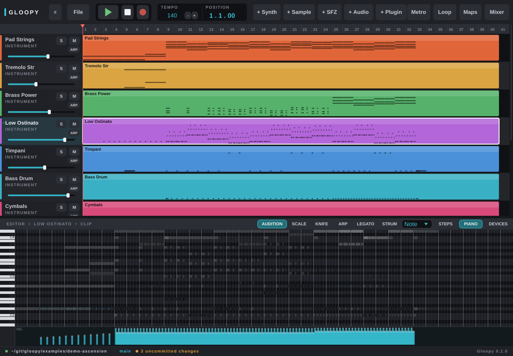

Composition as Code
Gloopy is a linear-arranger DAW whose primary surface is a diff-friendly, plain-text project format and an OSC + gRPC control API — so a script, an AI agent, or your CI can drive it as readily as the desktop app.

What makes it Gloopy
Everything the app can do is reachable — and verifiable — without the window. The GUI is built on the same control surface your scripts use.
Control API
Build a track, arm a clip, set automation, bounce a mix — from Python, Common Lisp, a shell, or an AI agent. Stable ids, live knobs over OSC.
Composition-as-repo
Tracks, clips, notes and automation serialise to readable TOML and .notes/.points files. Diff a change, branch a mix, review a pull request.
Instruments
A built-in synth and sampler, native SFZ playback, hosted VST3/LV2 plugins, and the featured Surge XT synth bundled in.
Headless
gloopy render song/ out.wav bounces the mix in CI; export-stems writes one WAV per track. Bit-reproducible.
◇ AI agents · Model Context Protocol
A built-in MCP server ships inside the binary, so an AI agent — Claude, or any MCP client — can inspect and control your song through the same shared model the desktop app and your scripts use. No glue code, no separate package, no Python.
Install
On Linux, add the package repository once and future releases arrive with your normal system updates. Packages are the full build, with the bundled Surge XT synth.
The manual
A user guide for making music at the desktop, and a control-and-scripting guide for driving Gloopy from Python, Common Lisp, and the wire.